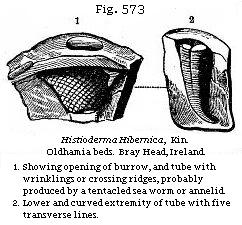

{kind=link}

The Student’s Elements of Geology
Classification of the Cambrian Group, and its Equivalent in Bohemia. — Upper Cambrian Rocks. — Tremadoc Slates and their Fossils. — Lingula Flags. — Lower Cambrian Rocks. — Menevian Beds. — Longmynd Group. — Harlech Grits with large Trilobites. — Llanberis Slates. — Cambrian Rocks of Bohemia. — Primordial Zone of Barrande. — Metamorphosis of Trilobites. — Cambrian Rocks of Sweden and Norway. — Cambrian Rocks of the United States and Canada. — Potsdam Sandstone. — Huronian Series. — Laurentian Group, upper and lower. — Eozoon Canadense, oldest known Fossil. — Fundamental Gneiss of Scotland.
The characters of the Upper and Lower Silurian rocks were established so fully, both on stratigraphical and palæontological data, by Sir Roderick Murchison after five years’ labour, in 1839, when his “Silurian System” was published, that these formations could from that period be recognised and identified in all other parts of Europe and in North America, even in countries where most of the fossils differed specifically from those of the classical region in Britain, where they were first studied.
While Sir R. I. Murchison was exploring in 1833, in Shropshire and the borders of Wales, the strata which in 1835 he first called Silurian, Professor Sedgwick was surveying the rocks of North Wales, which both these geologists considered at that period as of older date, and for which in 1836 Sedgwick proposed the name of Cambrian. It was afterwards found that a large portion of the slaty rocks of North Wales, which had been considered as more ancient than the Llandeilo beds and Stiper-Stones before alluded to, were, in reality, not inferior in position to those Lower Silurian beds of Murchison, but merely extensive undulations of the same, bearing fossils identical in species, though these were generally rarer and less perfectly preserved, owing to the changes which the rocks had undergone from metamorphic action. To such rocks the term “Cambrian” was no longer applicable, although it continued to be appropriate to strata inferior to the Stiper-Stones, and which were older than those of the Lower Silurian group as originally defined. It was not till 1846 that fossils were found in Wales in the Lingula
flags, the place of which will be seen in the table below. By this time Barrande had already published an account of a rich collection of fossils which he had discovered in Bohemia, portions of which he recognised as of corresponding age with Murchison’s Upper and Lower Silurian, while others were more ancient, to which he gave the name of “Primordial,” for the fossils were sufficiently distinct to entitle the rocks to be referred to a new period. They consisted chiefly of trilobites of genera distinct from those occurring in the overlying Silurian formations. These peculiar genera were afterwards found in rocks holding a corresponding position in Wales, and I shall retain for them the term Cambrian, as recent discoveries in our own country seem to carry the first fauna of Barrande, or his primordial type, even into older strata than any which he found to be fossiliferous in Bohemia.
The term primordial was intended to express M. Barrande’s own belief that the fossils of the rocks so-called afforded evidence of the first appearance of vital phenomena on this planet, and that consequently no fossiliferous strata of older date would or could ever be discovered. The acceptance of such a nomenclature would seem to imply that we despaired of extending our discoveries of new and more ancient fossil groups at some future day when vast portions of the globe, hitherto unexplored, should have been thoroughly surveyed. Already the discovery of the Laurentian Eozoon in Canada, presently to be mentioned, discountenances such views.
The following table will show the succession of the strata in England and Wales which belong to the Cambrian group or the fossiliferous rocks older than the Arenig or Lower Llandeilo rocks:
| UPPER CAMBRIAN | |
| TREMADOC SLATES | (Primordial of Barrande in part) |
| LINGULA FLAGS | (Primordial of Barrande) |
| LOWER CAMBRIAN | |
| MENEVIAN BEDS | (Primordial of Barrande) |
| LONGMYND GROUP | a. Harlech Grits b. Llanberis Slates |
Tremadoc Slates.—The Tremadoc slates of Sedgwick are more than 1000 feet in thickness, and consist of dark earthy slates occurring near the little town of Tremadoc, situated on the north side of Cardigan Bay, in Carnarvonshire. These
slates were first examined by Sedgwick in 1831, and were re-examined by him and described in 1846,* after some fossils had been found in the underlying Lingula flags by Mr. Davis. The inferiority in position of these Lingula flags to the Tremadoc beds was at the same time established. The overlying Tremadoc beds were traced by their pisolitic ore from Tremadoc to Dolgelly. No fossils proper to the Tremadoc slates were then observed, but subsequently, thirty-six species of all classes have been found in them, thanks to the researches of Messrs. Salter, Homfray, and Ash. We have already seen that in the Arenig or Stiper-Stones group, where the species are distinct, the genera agree with Silurian types; but in these Tremadoc slates, where the species are also peculiar, there is about an equal admixture of Silurian types with those which Barrande has termed “primordial.” Here, therefore, it may truly be said that we are entering upon a new domain of life in our retrospective survey of the past. The trilobites of new species, but of Lower Silurian genera, belong to Ogygia, Asaphus, and Cheirurus; whereas those belonging to primordial types, or Barrande’s first fauna as well as to the Lingula flags of Wales, comprise Dikelocephalus, Conocoryphe (for genera see Fig. 577 and 581),† Olenus, and Angelina.
In the Tremadoc slates are found Bellerophon, Orthoceras, and Cyrtoceras, all specifically distinct from Lower Silurian fossils of the same genera: the Pteropods Theca (Fig. 568) and Conularia range throughout these slates; there are no Graptolites. The Lingula (Lingulella) Davisii ranges from the top to the bottom of the formation, and links it with the zone next to be described. The Tremadoc slates are very local, and seem to be confined to a small part of North Wales; and Professor Ramsay supposes them to lie unconformably on the Lingula flags, and that a long interval of time elapsed between these formations. Cephalopoda have not yet been found lower than this group, but it will be observed that they occur here associated with genera of Trilobites considered by Barrande as characteristically Primordial, some of which belong to all the divisions of the British Cambrian about to be mentioned. This renders the absence of cephalopoda of less importance as bearing on the theory of development.
* Quart. Geol. Journ., vol. iii, p. 156.
† This genus has been substituted for Barrande’s
Conocephalus, as the latter term had been preoccupied by the
entomologists.
Lingula Flags.—Next below the Tremadoc slates in North Wales lie micaceous flagstones and slates, in which, in 1846, Mr. E. Davis discovered the Lingula (Lingulella), Fig. 570, named after him, and from which was derived the name of Lingula flags. These beds, which are palæontologically the equivalents of Barrande’s primordial zone, are represented by more than 5000 feet of strata, and have been studied chiefly in the neighbourhood of Dolgelly, Ffestiniog, and Portmadoc in North Wales, and at St. David’s in South Wales. They have yielded about forty species of fossils, of which six only are common to the overlying Tremadoc rocks, but the two formations are closely allied by having several characteristic “primordial” genera in common. Dikelocephalus, Olenus (Fig. 571), and Conocoryphe are prominent forms, as is also Hymenocaris (Fig. 569), a genus of phyllopod crustacean entirely confined to the Lingula Flags. According to Mr. Belt, who has devoted much attention to these beds, there are already palæontological data for subdividing the Lingula Flags into three sections.*
In Merionethshire, according to Professor Ramsay, the Lingula Flags attain their greatest development; in Carnarvonshire they thin out so as to have lost two-thirds of their thickness in eleven miles, while in Anglesea and on the Menai Straits both they and the Tremadoc beds are entirely absent, and the Lower Silurian rests directly on Lower Cambrian strata.
Menevian Beds.—Immediately beneath the Lingula Flags there occurs a series of dark grey and black flags and slates alternating at the upper part with some beds of sandstone, the whole reaching a thickness of from 500 to 600 feet. These beds were formerly classed, on purely lithological
* Geol. Mag., vol iv.
grounds, as the base of the Lingula Flags, but Messrs. Hicks and Salter, to whose exertions we owe almost all our knowledge of the fossils, have pointed out* that the most characteristic genera found in them are quite unknown in the Lingula Flags, while they possess many of the strictly Lower Cambrian genera, such as Microdiscus and Paradoxides. They therefore proposed to place them, and it seems to me with good reason, at the top of the Lower Cambrian under the term “Menevian,” Menevia being the classical name of St. David’s. The beds are well exhibited in the neighbourhood of St. David’s in South Wales, and near Dolgelly and Maentwrog in North Wales. They are the equivalents of the lowest part of Barrande’s Primordial Zone (Étage C). More than forty species have been found in them, and the group is altogether very rich in fossils for so early a period.
The trilobites are of large size; Paradoxides Davidis (see Fig. 572), the largest trilobite known in England, 22 inches or nearly two feet long, is peculiar to the Menevian Beds. By referring to the Bohemian trilobite of the same genus (Fig. 576), the reader will at once see how these fossils (though of such different dimensions) resemble each other in Bohemia and Wales, and other closely allied species from the two regions might be added, besides some which are common to both countries. The Swedish fauna, presently to be mentioned, will be found to be still more nearly connected with the Welsh Menevian. In all these countries there is an equally marked difference between the Cambrian fossils and those of the Upper and Lower Silurian rocks. The trilobite with the largest number of rings, Erinnys venulosa, occurs here in conjunction with Agnostus and Microdiscus, the genera with the smallest number. Blind trilobites are also found as well as those which have the largest eyes, such as Microdiscus on the one hand, and Anoplenus on the other.
Older than the Menevian Beds are a thick series of olive green, purple, red and grey grits and conglomerates found in North and South Wales, Shropshire, and parts of Ireland
* British Association Report 1865, 1866, 1868 and Quart. Geol. Journ., vols. xxi, xxv.
and Scotland. They have been called by Professor Sedgwick the Longmynd or Bangor Group, comprising, first, the Harlech and Barmouth sandstones; and secondly, the Llanberis slates.
Harlech Grits.—The sandstones of this period attain in the Longmynd hills a thickness of no less than 6000 feet without any interposition of volcanic matter; in some places in Merionethshire they are still thicker. Until recently these rocks possessed but a very scanty fauna.
With the exception of five species of annelids (see Fig. 460) brought to light by Mr. Salter in Shropshire, and Dr. Kinahan in Wicklow, and an obscure crustacean form, Palæopyge Ramsayi, they were supposed to be barren of organic remains. Now, however, through the labours of Mr. Hicks, they have yielded at St. David’s a rich fauna of trilobites, brachiopods, phyllopods, and pteropods, showing, together with other fossils, a by no means low state of organisation at this early period. Already the fauna amounts to 20 species referred to 17 genera.
A new genus of trilobite called Plutonia Sedgwickii, not yet figured and described, has been met with in the Harlech grits. It is comparable in size to the large Paradoxides Davidis before mentioned, has well-developed eyes, and is covered all over with tubercles. In the same strata occur other genera of trilobites, namely, Conocoryphe, Paradoxides, Microdiscus, and the Pteropod Theca (Fig. 568), all represented by species peculiar to the Harlech grits. The sands of this formation are often rippled, and were evidently left dry at low tides, so that the surface was dried by the sun and made to shrink and present sun-cracks. There are also distinct impressions of rain-drops on many surfaces, like those in Fig. 444 and 445.
Lanberis Slates.—The slates of Llanberis and Penrhyn in Carnarvonshire, with their associated sandy strata, attain a great thickness, sometimes about 3000 feet. They are perhaps not more ancient than the Harlech and Barmouth beds last mentioned, for they may represent the deposits of fine
* Brit. Assoc. Report, 1868.
mud thrown down in the same sea, on the borders of which the sands above-mentioned were accumulating. In some of these slaty rocks in Ireland, immediately opposite Anglesea and Carnarvon, two species of fossils have been found, to which the late Professor E. Forbes gave the name of Oldhamia. The nature of these organisms is still a matter of discussion among naturalists.
Cambrian Rocks of Bohemia (Primordial zone of Barrande).—In the year 1846, as before stated, M. Joachim Barrande, after ten years’ exploration of Bohemia, and after collecting more than a thousand species of fossils, had ascertained the existence in that country of three distinct faunas below the Devonian. To his first fauna, which was older than any then known in this country, he gave the name of Étage C; his two first stages A and B consisting of crystalline and metamorphic rocks and unfossiliferous schists. This Étage C or primordial zone proved afterwards to be the equivalent of those subdivisions of the Cambrian groups which have been above described under the names of Menevian and Lingula Flags. The second fauna tallies with Murchison’s Lower Silurian, as originally defined by him when no fossils had been discovered below the Stiper-Stones. The third fauna agrees with the Upper Silurian of the same author. Barrande, without government assistance, had undertaken single-handed the geological survey of Bohemia, the fossils previously obtained from that country having scarcely exceeded 20 in number, whereas he had already acquired, in 1850, no less than 1100 species, namely, 250 crustaceans (chiefly Trilobites), 250 Cephalopods, 160 gasteropods and pteropods, 130 acephalous mollusks, 210 brachiopods, and 110 corals and other fossils. These numbers have since been almost doubled by subsequent investigations in the same country.
In the primordial zone C, he discovered trilobites of the genera Paradoxides, Conocoryphe, Ellipsocephalus, Sao, Arionellus, Hydrocephalus, and Agnostus. M. Barrande pointed out that these primordial trilobites have a peculiar facies of
their own dependent on the multiplication of their thoracic segments and the diminution of their caudal shield or pygidium.
One of the “primordial” or Upper Cambrian Trilobites of the genus Sao, a form not found as yet elsewhere in the world, afforded M. Barrande a fine illustration of the metamorphosis of these creatures, for he traced them through no less than twenty stages of their development. A few of these changes have been selected for representation in Figure 580, that the reader may learn the gradual manner in which different segments of the body and the eyes make their appearance.
In Bohemia the primordial fauna of Barrande derived its importance exclusively from its numerous and peculiar trilobites. Besides these, however, the same ancient schists have yielded two genera of brachiopods, Orthis and Orbicula, a Pteropod of the genus Theca, and four echinoderms of the cystidean family.
Cambrian of Sweden and Norway.—The Cambrian beds of Wales are represented in Sweden by strata the fossils of which have been described by a most able naturalist, M. Angelin, in his “Palæontologica Suecica” (1852-4). The “alum-schists,” as they are called in Sweden, are horizontal argillaceous rocks which underlie conformably certain Lower Silurian strata in the mountain called Kinnekulle, south of the great Wener Lake in Sweden. These schists contain trilobites belonging to the genera Paradoxides, Olenus, Agnostus, and others, some of which present rudimentary forms, like the genus last mentioned, without eyes, and with the body segments scarcely developed, and others, again, have the number of segments excessively multiplied, as in Paradoxides. Such peculiarities agree with the characters of the crustaceans met with in the Cambrian strata of Wales; and Dr. Torell has recently found in Sweden the Paradoxides Hicksii, a well-known Lower Cambrian fossil.
At the base of the Cambrian strata in Sweden, which in the neighbourhood of Lake Wener are perfectly horizontal, lie ripple-marked quartzose sandstones with worm-tracks and annelid borings, like some of those found in the Harlech grits of the Longmynd. Among these are some which have been referred doubtfully to plants. These sandstones have been called in Sweden “fucoid sandstones.” The whole thickness of the Cambrian rocks of Sweden does not exceed 300 feet from the equivalents of the Tremadoc beds to these sandstones, which last seem to correspond with the Longmynd, and are regarded by Torell as older than any fossiliferous primordial rocks in Bohemia.
Cambrian of the United States and Canada (Potsdam Sandstone).—This formation, as we learn from Sir W. Logan, is 700 feet thick in Canada; the upper part consists of sandstone containing fucoids, and perforated by small vertical holes, which are very characteristic of the rock, and appear to have been made by annelids (Scolithus linearis). The lower portion is a conglomerate with quartz pebbles. I have seen the Potsdam sandstone on the banks of the St. Lawrence, and on the borders of Lake Champlain, where, as at Keesville, it is a white quartzose fine-grained grit, almost passing into quartzite. It is divided into horizontal ripple-marked beds, very like those of the Lingula Flags of Britain, and replete with a small round-shaped Obolella, in such numbers as to divide the rock into parallel planes, in the same manner as do the scales of mica in some micaceous sandstones. Among the shells of this formation in Wisconsin are species of Lingula and Orthis, and several trilobites
of the primordial genus Dikelocephalus (Fig. 581). On the banks of the St. Lawrence, near Beauharnois and elsewhere, many fossil footprints have been observed on the surface of the rippled layers. They are supposed by Professor Owen to be the trails of more than one species of articulate animal, probably allied to the King Crab, or Limulus.
Recent investigations by the naturalists of the Canadian survey have rendered it certain that below the level of the Potsdam Sandstone there are slates and schists extending from New York to Newfoundland, occupied by a series of trilobitic forms similar in genera, though not in species, to those found in the European Upper Cambrian strata.
Huronian Series.—Next below the Upper Cambrian occur strata called the Huronian by Sir W. Logan, which are of vast thickness, consisting chiefly of quartzite, with great masses of greenish chloritic slate, which sometimes include pebbles of crystalline rocks derived from the Laurentian formation, next to be described. Limestones are rare in this series, but one band of 300 feet in thickness has been traced for considerable distances to the north of Lake Huron. Beds of greenstone are intercalated conformably with the quartzose and argillaceous members of this series. No organic remains have yet been found in any of the beds, which are about 18,000 feet thick, and rest unconformably on the Laurentian rocks.
In the course of the geological survey carried on under the direction of Sir W.E. Logan, it has been shown that, northward of the river St. Lawrence, there is a vast series of crystalline rocks of gneiss, mica-schist, quartzite, and limestone, more than 30,000 feet in thickness, which have been called Laurentian, and which are already known to occupy an area of about 200,000 square miles. They are not only more ancient than the fossiliferous Cambrian formations above described, but are older than the Huronian last mentioned, and had undergone great disturbing movements before the Potsdam sandstone and the other “primordial” or Cambrian rocks were formed. The older half of this Laurentian series is unconformable to the newer portion of the same.
Upper Laurentian or Labrador Series.—The Upper Group, more than 10,000 feet thick, consists of stratified crystalline rocks in which no organic remains have yet been found. They consist in great part of feldspars, which vary in composition from anorthite to andesine, or from those kinds in which there is less than one per cent of potash and soda to those in which there is more than seven per cent of these alkalies, the soda preponderating greatly. These feldsparites sometimes form mountain masses almost without any admixture of other minerals; but at other times they include augite, which passes into hypersthene. They are often granitoid in structure. One of the varieties is the same as the apolescent labradorite rock of Labrador. The Adirondack Mountains in the State of New York are referred to the same series, and it is conjectured that the hypersthene rocks of Skye, which resemble this formation in mineral character, may be of the same geological age.
Lower Laurentian.—This series, about 20,000 feet in thickness, is, as before stated, unconformable to that last mentioned; it consists in great part of gneiss of a reddish tint with orthoclase feldspar. Beds of nearly pure quartz, from 400 to 600 feet thick, occur in some places. Hornblendic and micaceous schists are often interstratified, and beds of limestone, usually crystalline. Beds of plumbago also occur. That this pure carbon may have been of organic origin before metamorphism has naturally been conjectured.
There are several of these limestones which have been traced to great distances, and one of them is from 700 to 1500 feet thick. In the most massive of them Sir W. Logan observed, in 1859, what he considered to be an organic body much resembling the Silurian fossil called Stromatopora rugosa. It had been obtained the year before by Mr. J. MacMullen at the Grand Calumet, on the river Ottawa. This fossil was examined in 1864 by Dr. Dawson of Montreal, who detected in it, by aid of the microscope, the distinct structure of a Rhizopod or Foraminifer. Dr. Carpenter and Professor T. Rupert Jones have since confirmed this opinion, comparing the structure to that of the well-known nummulite. It appears to have grown one layer over another, and to have formed reefs of limestone as do the living coral-building polyp animals. Parts of the original skeleton, consisting of carbonate of lime, are still preserved; while certain inter-spaces in the calcareous fossil have been filled up with serpentine and white augite. On this oldest of known organic remains Dr. Dawson has conferred the name of Eozoon
Canadense (see Figs. 582, 583); its antiquity is such that the distance of time which separated it from the Upper Cambrian period, or that of the Potsdam sandstone, may, says Sir W. Logan, be equal to the time which elapsed between the Potsdam sandstone and the nummulitic limestones of the Tertiary period. The Laurentian and Huronian rocks united are about 50,000 feet in thickness, and the Lower Laurentian was disturbed before the newer series was deposited. We may naturally expect the other proofs of unconformability will hereafter be detected at more than one point in so vast a succession of strata.
Fig. 582. a. Chambers of lower tier
communicating at +, and separated from adjoining chambers at O by
an intervening septum, traversed by passages. b. Chambers of
an upper tier. c. Walls of the chambers traversed by fine
tubules. (These tubules pass with uniform parallelism from the
inner to the outer surface, opening at regular distances from each
other.) d. Intermediate skeleton, composed of homogeneous
shell substance, traversed by f. Stoloniferous passages
connecting the chambers of the two tiers. e. Canal system in
intermediate skeleton, showing the arborescent saceodic
prolongations. (Fig. 583 shows these bodies in a decalcified
state.) f. Stoloniferous passages.
Fig. 583. Decalcified portion of natural rock, showing canal
system and the several layers; the acuteness of the planes
prevents more than one or two parallel tiers being observed.
The mineral character of the Upper Laurentian differs, as we have seen, from that of the Lower, and the pebbles of gneiss in the Huronian conglomerates are thought to prove that the Laurentian strata were already in a metamorphic state before they were broken up to supply materials for the Huronian. Even if we had not discovered the Eozoon, we might fairly have inferred from analogy that as the quartzites were once beds of sand, and the gneiss and mica-schist derived from shales and argillaceous sandstones, so the calcareous masses, from 400 to 1000 feet and more in thickness, were originally of organic origin. This is now generally believed to have been the case with the Silurian, Devonian, Carboniferous, Oolitic, and Cretaceous limestones and those nummulitic rocks of tertiary date which bear the closest affinity to the Eozoon reefs of the Lower Laurentian. The oldest stratified rock in Scotland is that called by Sir R. Murchison
“the fundamental gneiss,” which is found in the north-west of Ross-shire, and in Sutherlandshire (see Fig. 82), and forms the whole of the adjoining island of Lewis, in the Hebrides. It has a strike from north-west to south-east, nearly at right angles to the metamorphic strata of the Grampians. On this Laurentian gneiss, in parts of the western Highlands, the Lower Cambrian and various metamorphic rocks rest unconformably. It seems highly probable that this ancient gneiss of Scotland may correspond in date with part of the great Laurentian group of North America.
{kind=link}
{kind=link}
{kind=link}
{kind=link}